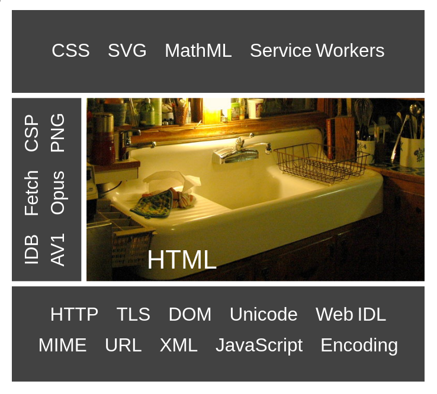
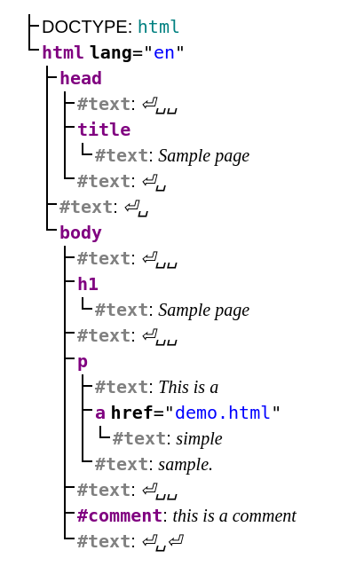
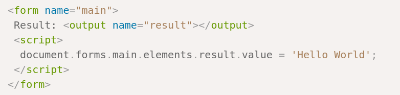
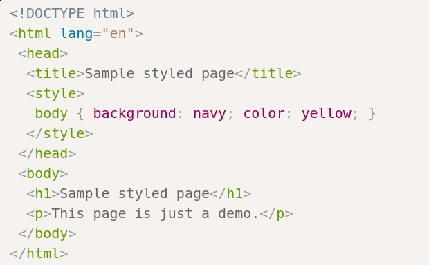
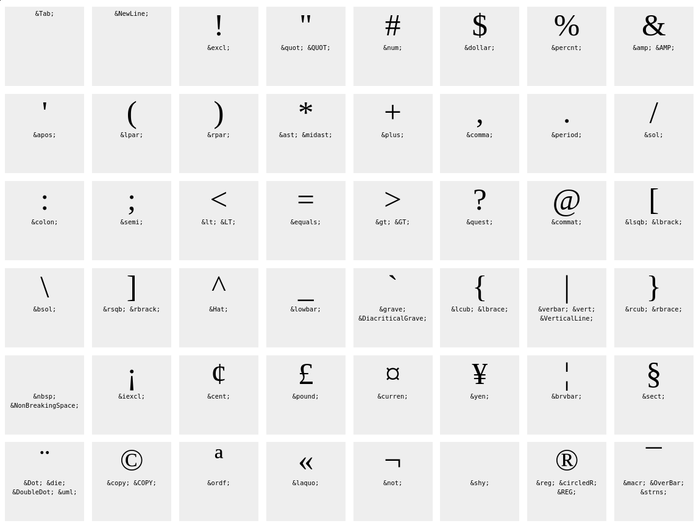
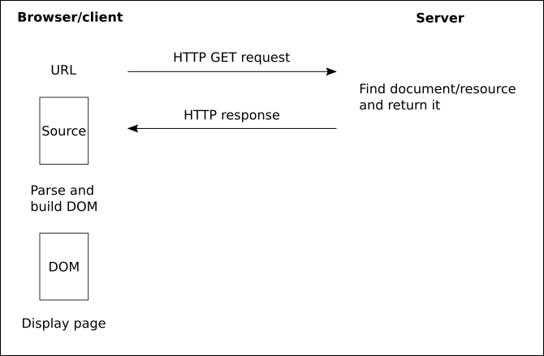

<!doctype html>
<html class="theme-5">
<meta charset="utf-8" />
<link href="../html-slideshow.bundle.min.css" rel="stylesheet" />
<link href="../style.css" rel="stylesheet" />
<script src="https://dbwebb.se/cdn/js/html-slideshow_v1.1.0.bundle.min.js"></script>

<title>HTML - Elements and Structure</title>

<script data-role="slide" type="text/html" data-markdown class="titlepage center">
# HTML
## Standard, Elements and Structure
### Mikael Roos
</script>


<script data-role="slide" type="text/html" data-markdown>
# Agenda

* HTML HyperText Markup Language
* Standard
* Structure
* Elements
* Helpers

</script>


<script data-role="slide" type="text/html" data-markdown class="titlepage center">
# HTML

> "HTML is the World Wide Web's core markup language."

</script>


<script data-role="slide" type="text/html" data-markdown class="titlepage center">
# Standard
</script>


<script data-role="slide" type="text/html" data-markdown>
# The Standard

* HTML - HyperText Markup Language
* DOM - Document Object Model

The specifications as WHATWG Living Standards

* https://html.spec.whatwg.org/
* https://dom.spec.whatwg.org/

</script>


<script data-role="slide" type="text/html" data-markdown>
# DOM

* DOM Document Object Model

> "DOM defines a platform-neutral model for events, aborting activities, and node trees."

<p class="footnote">https://dom.spec.whatwg.org/<br><br>This is the in-memory representation of the HTML document and its API.</p>

</script>


<script data-role="slide" type="text/html" data-markdown>
# HTML

* HTML HyperText Markup Language

> "Originally, HTML was primarily designed as a language for semantically describing scientific documents. Its general design, however, has enabled it to be adapted, over the subsequent years, to describe a number of other types of documents and even applications."

<p class="footnote">https://html.spec.whatwg.org/</p>

</script>


<script data-role="slide" type="text/html" data-markdown>
# HTML5 or HTML?

* "HTML5" is widely used as a buzzword to refer to modern web technologies

</script>


<script data-role="slide" data-markdown type="text/html" class="center">
# Webtec standards
<figure>
    
    <figcaption>"HTML5" related web technologies and standards.</figcaption>
</figure>
</script>


<script data-role="slide" data-markdown type="text/html" class="center">
# WHATWG standards

```
Compatibility       Console         DOM
Encoding            Fetch           Fullscreen API
HTML                Infra           MIME Sniffing
Notifications API   Quirks Mode     Storage
Streams             URL             XMLHttpRequest
```

<p class="footnote">https://spec.whatwg.org/<br><br>WHATWG is the standard organisation for HTML and DOM.</p>

</script>


<script data-role="slide" type="text/html" data-markdown>
# WHATWG

* Web Hypertext Application Technology Working Group (WHATWG)
* Community of people interested in evolving the web through standards and tests

> "founded by individuals of Apple, the Mozilla Foundation, and Opera Software in 2004, after a W3C workshop. Apple, Mozilla and Opera were becoming increasingly concerned about the W3C’s direction with XHTML, lack of interest in HTML, and apparent disregard for the needs of real-world web developers"

</script>


<script data-role="slide" type="text/html" data-markdown>
# WHATWG...

> "In 2017, Apple, Google, Microsoft, and Mozilla helped develop an IPR policy and governance structure for the WHATWG, together forming a Steering Group to oversee relevant policies."

* 2019: Memorandum of understanding (W3C) that WHATWG maintains the HTML and DOM Living Standards

<p class="footnote">Memorandum of Understanding Between W3C and WHATWG<br>https://www.w3.org/2019/04/WHATWG-W3C-MOU.html</p>

</script>


<script data-role="slide" type="text/html" data-markdown class="titlepage center">
# HTML
</script>


<script data-role="slide" type="text/html" data-markdown>
# HTML

* Textbased markup format for the web
* Mime type `text/html`
* In-memory representation is "DOM HTML" (DOM)

</script>


<script data-role="slide" type="text/html" data-markdown>
# HTML versus XHTML

* XHTML - Extensible HyperText Markup Language
    * XML format
    * Mime type `application/xhtml+xml`
* HTML/XML are extended from SGML (Standard Generalized Markup Language)

<p class="footnote">XHTML is like XML, more strict in its format and parsing may fail with error. Parsing HTML may esult in "browser fixes it for you".</p>

</script>


<script data-role="slide" type="text/html" data-markdown>
# HTML document

```
<!DOCTYPE html>
<html lang="en">
    <head>
        <meta charset="utf-8">
        <title>Sample page</title>
    </head>
    <body>
        <h1>Sample page</h1>
        <p>This is a <a href="demo.html">simple</a> sample.</p>
        <!-- this is a comment -->
    </body>
</html>
```

<p class="footnote">Note document type with head and body, all elements have starttag and endtag.</p>

</script>


<script data-role="slide" type="text/html" data-markdown>
# HTML nesting elements

Wrong!

```
<p>This is <em>very <strong>wrong</em>!</strong></p>
```

Correct!

```
<p>This <em>is <strong>correct</strong>.</em></p>
```

</script>


<script data-role="slide" type="text/html" data-markdown>
# HTML attributes

```
<a href="demo.html">simple</a>
```

* `href` is an attribute
    * having the value of `"demo.html"`
* attributes placed in the starttag

</script>


<script data-role="slide" data-markdown type="text/html" class="center">
# Browser parsing
<figure>
    
    <figcaption>A HTML document parsed into a DOM tree of nodes, the in-memory representation of the web page.</figcaption>
</figure>
</script>


<script data-role="slide" data-markdown type="text/html" class="center">
# Source
<figure>
    
    <figcaption>You can right click in the web page, get the menu and select "View page source" to see the actual source retrieved from the server. Really, really useful for debugging and development!</figcaption>
</figure>
</script>


<script data-role="slide" data-markdown type="text/html" class="center">
# Parsed DOM
<figure>
    
    <figcaption>The browser parses the response, builds a tree of nodes (DOM), might reformat the source and adds styles and scripts.</figcaption>
</figure>
</script>


<script data-role="slide" data-markdown type="text/html" class="center">
# Manipulate DOM
<figure>
    
    <figcaption>Scripts (JavaScript) can manipulate the in-memory DOM tree, in the browser.<br>This can make the web page a bit more "live" and less static in the browser.</figcaption>
</figure>
</script>


<script data-role="slide" data-markdown type="text/html" class="center">
# Affect the style
<figure>
    
    <figcaption>Use CSS to influence how the HTML is rendered.<br>CSS is for style, presentation and layout.</figcaption>
</figure>
</script>


<script data-role="slide" type="text/html" data-markdown>
# Secure applications

* Not validating user input
* Cross-site scripting (XSS)
* SQL injection
* Cross-site request forgery (CSRF)
* Clickjacking
* No GET to change state

<p class="footnote">Building secure web applications is always an issue. You need to be aware of the most common pitfalls.</p>

</script>


<script data-role="slide" type="text/html" data-markdown>
# Validators

* HTML validator
    * https://validator.w3.org/
* HTML validator (nu)
    * https://validator.w3.org/nu/
* Unicorn
    * https://validator.w3.org/unicorn/
* Link checker
    * https://validator.w3.org/checklink

<p class="footnote">Add to your footer when developing a page.</p>

</script>


<script data-role="slide" type="text/html" data-markdown class="titlepage center">
# HTML elements
</script>


<script data-role="slide" type="text/html" data-markdown>
# Document element

```
<!DOCTYPE html>
<html lang="en">

</html>
```

<p class="footnote">The document type and the root document element.</p>

</script>


<script data-role="slide" type="text/html" data-markdown>
# Metadata

```
<!DOCTYPE html>
<html lang="en">
    <head>
        <meta charset="utf-8">
        <base href="https://www.example.com/">
        <title>An application with a long head</title>
        <link rel="stylesheet" href="default.css">
        <link rel="stylesheet alternate" href="big.css">
    </head>

</html>
```

<p class="footnote">The head contains meta data about the document.</p>

</script>


<script data-role="slide" type="text/html" data-markdown>
# Sections

```
body
article
section
nav
aside
h1, h2, h3, h4, h5, h6
hgroup
header
footer
address
```

<p class="footnote">Sectioning elements to organise the document into meaningful and semantic sections.</p>

</script>


<script data-role="slide" type="text/html" data-markdown>
# Sections...

```
<!DOCTYPE html>
<html lang="en">

    <body>
        <header></header>
        <article>
            <header><h1></h1></header>
            <section></section>
            <section></section>
            <footer></footer>
        </article>
        <footer></footer>
    </body>
</html>
```

<p class="footnote">A webpage can have a page header and footer. An article can have an header and an footer.</p>

</script>


<script data-role="slide" type="text/html" data-markdown>
# Grouping content

```
p       hr
pre     blockquote
ol  ul  li
dl  dt  dd
figure  figcaption
main    div
menu
```

<p class="footnote">Elements to group and organise the actual content of the page.</p>

</script>


<script data-role="slide" type="text/html" data-markdown>
# Element p

```
<p>The little kitten gently seated herself on a piece of
carpet. Later in her life, this would be referred to as the time the
cat sat on the mat.</p>
```

<p class="footnote">A paragraph.</p>

</script>


<script data-role="slide" type="text/html" data-markdown>
# Element ul/li

```
<p>I have lived in the following countries:</p>
<ul>
    <li>Norway
    <li>Switzerland
    <li>United Kingdom
    <li>United States
</ul>
```

<p class="footnote">An unordered list with list items.</p>

</script>


<script data-role="slide" type="text/html" data-markdown>
# Element figure/figcaption

```
<figure>
    
    <figcaption>
        Exhibit A. The alleged <cite>rough copy</cite> comic.
    </figcaption>
</figure>

<figure>
    <video src="ex-b.mov"></video>
    <figcaption>
        Exhibit B. The <cite>Rough Copy</cite> trailer.
    </figcaption>
</figure>
```

<p class="footnote">Figures with a caption, wrapping images or media.</p>

</script>


<script data-role="slide" type="text/html" data-markdown>
# Text-level semantics

```
a       em      strong  small   s       cite
q       dfn     abbr    ruby    rt      rp
data    time    code    var     samp    kbd
sub     sup     i       b       u       mark
bdi     bdo     span    br      wbr
```

<p class="footnote">To markup the inline text.</p>

</script>


<script data-role="slide" type="text/html" data-markdown>
# Element a

```
<nav>
    <ul>
        <li> <a href="/">Home</a> </li>
        <li> <a href="/news">News</a> </li>
        <li> <a>Examples</a> </li>
        <li> <a href="/legal">Legal</a> </li>
    </ul>
</nav>
```

<p class="footnote">Navigation with anchors (links).</p>

</script>


<script data-role="slide" type="text/html" data-markdown>
# Element em

```
<p>Cats are cute animals.</p>
<p><em>Cats</em> are cute animals.</p>
<p>Cats <em>are</em> cute animals.</p>
```

<p class="footnote">Markup text to provide different meanings using emphase.</p>

</script>


<script data-role="slide" type="text/html" data-markdown>
# More text formatting

```
<h1>Chapter 1: <strong>The Praxis</strong></h1>

<p><strong><small>
    Continued use of this service will result in a kiss.
</small></strong></p>

<p>Buy our Iced Tea and Lemonade!</p>
<p><s>Recommended retail price: $3.99 per bottle</s></p>
<p><strong>Now selling for just $2.99 a bottle!</strong></p>
```

<p class="footnote">Combine text elements to provide more meaning.</p>

</script>


<script data-role="slide" type="text/html" data-markdown>
# Time and date

```
<time>2011-11</time>
<time>2011-11-18</time>
<time>11-18</time>

<time>14:54</time>
<time>14:54:39</time>
<time>14:54:39.929</time>

<time>2011-11-18 14:54:39.929</time>
<time>2011-11-18 06:54:39.929-08:00</time>

<time>2011-W47</time>
<time>4h 18m 3s</time>
```

</script>


<script data-role="slide" type="text/html" data-markdown>
# Time and date...

```
<p>Our first date was
    <time datetime="2006-09-23">a Saturday</time>.
</p>

<p>We stopped talking at
    <time datetime="2006-09-24T05:00-07:00">
        5am the next morning
    </time>
    .
</p>

<p>Today is <time datetime="2011-11-18">Friday</time>.</p>
```

<p class="footnote">Sometime a time need to be both readable and parsable.</p>

</script>


<script data-role="slide" type="text/html" data-markdown>
# Embedded content

```
picture     source      img
iframe      embed       object
param       video       audio
track       map         area
```

* MathML, SVG

<p class="footnote">Embed various external items into your HTML document.</p>

</script>


<script data-role="slide" type="text/html" data-markdown>
# Tabular data

```
table
caption     colgroup    col
tbody       thead       tfoot
tr          td          th
```

<p class="footnote">Create tables with data and organise with caption, header and footer.<br>Perhaps layout all your courses with their grades, points and subject matter, that would make a nice table.</p>

</script>


<script data-role="slide" type="text/html" data-markdown>
# Forms

```
form
label       input       button
select      datalist    optgroup
option      textarea    output
progress    meter       fieldset
legend
```

<p class="footnote">HTML forms allow for the user to input data and send to the server, like when you checkout and pay the gods from your favorite online store.</p>

</script>


<script data-role="slide" type="text/html" data-markdown>
# More elements

* Interactive
* Scripting
* Custom
* Common idioms without dedicated elements

<p class="footnote">To enhance the presentation and usability of HTML.</p>

</script>


<script data-role="slide" type="text/html" data-markdown>
# Microdata

* Annotate content with specific machine-readable labels

```
<div itemscope>
 <p>My name is <span itemprop="name">Elizabeth</span>.</p>
</div>

<div itemscope>
 <p>My name is <span itemprop="name">Daniel</span>.</p>
</div>
```

<p class="footnote">To allow both human and machine readers.</p>

</script>


<script data-role="slide" type="text/html" data-markdown>
# User interaction

* The "hidden" attribute
* Focus
* Keyboard shortcuts
* Make content editable
* Drag and drop

<p class="footnote">So the page-maker can make it easier to interact with the page.</p>

</script>


<script data-role="slide" type="text/html" data-markdown>
# HTML syntax

* A doctype
* The html element
* UTF-8 as charset
* Elements, starttag, enddtag, attribute, value
* Comments
* Formatting
* Validate

<p class="footnote">The basics of a HTML document.</p>

</script>


<script data-role="slide" type="text/html" data-markdown>
# HTML example

```
<!DOCTYPE html>
<html lang="en">
    <head>
        <meta charset="utf-8">
        <title>Sample page</title>
    </head>
    <body>
        <h1>Sample page</h1>
        <p>This is a <a href="demo.html">simple</a> sample.</p>
        <!-- this is a comment -->
    </body>
</html>
```

<p class="footnote">Use a small example page like this when you try to learn new elements.</p>

</script>


<script data-role="slide" type="text/html" data-markdown>
# HTML example...

```
<!DOCTYPE html>
<html lang="en">
    <head>
        <meta charset="utf-8">
        <title>Sample page</title>
    <body>
        <h1>Sample page</h1>
        <p>This is a <a href="demo.html">simple</a> sample.
        <!-- this is a comment -->
```

<p class="footnote">Some endtags are optional.<br>The specification says so.<br>THe w3C cheatsheet is an easy way to access those details.<br>Use the validators to see if you got it right.</p>

</script>


<script data-role="slide" type="text/html" data-markdown>
# HTML entites

* To validate, some characters may be escaped by their respective HTML entity
* A way to enter special characters
* A © can be entered by the entity `&copy;`
* The most common are (in a web page)
    * &amp; `&amp;`
    * &lt; `&lt;`
    * &gt; `&gt;`

<p class="footnote">Check out the HTML entities at:<br>https://dev.w3.org/html5/html-author/charref</p>

</script>


<script data-role="slide" data-markdown type="text/html" class="center">
# HTML entites...
<figure>
    
    <figcaption>Some of the available HTML entities.</figcaption>
</figure>
</script>


<script data-role="slide" type="text/html" data-markdown>
# Special characters

* You can use UTF-8 characters directly
* or through their Unicode (value identifying the character)

🥰 &#x1F970; &#129392;
😍 &#x1F60D; &#128525;
😂 &#x1F602; &#128514;

```
🥰 &#x1F970; &#129392;
😍 &#x1F60D; &#128525;
😂 &#x1F602; &#128514;
```

<p class="footnote">Use HTML entities or Unicode/UTF-8 characters to display icons and special characters.</p>

</script>


<script data-role="slide" type="text/html" data-markdown>
# Rendering

* Retrive the document (pure text) from the URL
* Parse the initial part to decide doctype and charset
* Parse document and build up a DOM tree
    * Try to fix errors
* Show in browser

</script>


<script data-role="slide" data-markdown type="text/html" class="center">
# Rendering...
<figure>
    
    <figcaption>The process of retrieving, parsing and displaying a web page.</figcaption>
</figure>
</script>


<script data-role="slide" type="text/html" data-markdown>
# Resources

* WHATWG
* W3C
* https://www.w3.org/2009/cheatsheet/
* MDN Mozilla Developers Network
* W3Schools
* Validators
* CanIUse
* Google "mdn html element" or "html element"

</script>


<script data-role="slide" type="text/html" data-markdown>
# Industry matters

* HTML and web technologies are a cornerstone in many applications and services
* It provides access to browsers on a various of platforms
    * mobile, padlet, desktop
* Create GUI for administration
    * Routers
    * Internet of Things (IoT)
* Build regular crossplatform desktop applications

</script>


<script data-role="slide" type="text/html" data-markdown>
# Research matters

* HTML is a technique and a standard driven by a standardisation organisation
* Research is not solely done on such technique
* You need to add an aspect of HTML to make it more researchable
    * Security, usability
    * Performance, usage
    * Search engine, parsing

</script>


<script data-role="slide" type="text/html" data-markdown>
# Research matters...

* A stacking model using URL and HTML features for phishing webpage detection
* Automated generation of REST API specification from plain HTML documentation
* Comparison of web scraping techniques: regular expression, HTML DOM and Xpath
* HTML5 and the evolution of HTML; tracing the origins of digital platforms

<p class="footnote">Titles of research papers including HTML from 2017 and forward.</p>

</script>


<script data-role="slide" type="text/html" data-markdown>
# Summary

* HTML HyperText Markup Language
* Standard
* Structure
* Elements
* Helpers

</script>


<script data-role="slide" type="text/html" data-markdown class="titlepage center">
# The end
</script>


<script data-role="slide" type="text/html" data-markdown>
</script>

</html>
